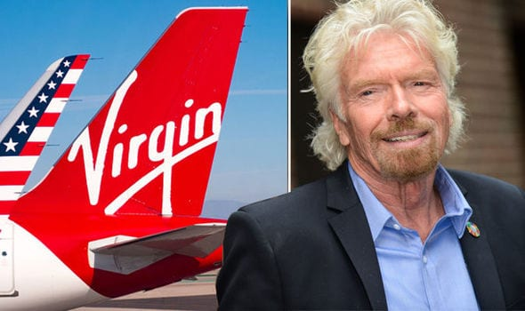

Sir Richard Branson

Khi Sir Richard Branson – doanh chủ nổi tiếng nhất nước Anh – khai trương Công ty Virgin Mobile USA, ông đã làm theo cách mà chỉ bản thân ông mới có thể làm. Với mong muốn làm cho sản phẩm mới của mình trông thật khác biệt so với các đối thủ cạnh tranh, ông đã tập trung nhấn mạnh vào thông điệp “Nothing to hide” (tạm dịch: Không có gì để giấu) ngụ ý sẽ không có một chi phí ngầm nào đằng sau dịch vụ viễn thông của công ty. Trong ngày ra mắt công ty, Sir Richard Branson xuất hiện trong một cái cần cẩu giữa Quảng trường Thời đại ở New York. Sau đó, ông trút bỏ y phục và bên trong mặc một bộ đồ bó sát màu da người, với một chiếc điện thoại hiệu Virgin được che kín phần thân dưới của ông. Xung quanh ông là dàn diễn viên của vở nhạc kịch The full monty của Nhà hát Broadway. Tất cả đều tạo dáng trong cùng một tư thế.
Buổi ra mắt hoành tráng này đã mang lại cho ông sự chú ý mà ông hằng tìm kiếm và thêm một thương hiệu mới được ra đời dưới đế chế Virgin. Với hàng trăm công ty trên thế giới và khoảng mười tỷ đô-la lợi nhuận hằng năm, Virgin chính là nơi thể hiện mọi sở thích, đam mê và tính bốc đồng của Branson. Trong lịch sử của công ty này, những ý tưởng được yêu thích, bao gồm những chuyến du lịch bằng máy bay và tàu hỏa, điện thoại di động, dịch vụ tài chính, Internet, khách sạn và các gói du lịch đều nảy sinh từ mong muốn và nhu cầu của Branson với tư cách là một khách hàng. “Lý do khiến tôi khởi nghiệp không phải vì tôi muốn kiếm được thật nhiều tiền mà vì kinh nghiệm của cá nhân tôi đối với các ngành kinh doanh rất ít và tôi muốn tạo ra những trải nghiệm tuyệt vời cho bản thân và bạn bè mình.”
Không ai nghĩ rằng Branson có khả năng làm được tất cả những việc đó. Năm 15 tuổi, ông nghỉ học để bắt đầu công việc kinh doanh đầu tiên của mình với một tờ báo mang phong cách của tạp chí Rolling Stone – nơi ông có thể lên tiếng phản đối cuộc chiến tranh ở Việt Nam. Vào thời điểm năm 1966, ông không hề có sở thích kinh doanh. Mặc dù mắc chứng khó đọc[40], Branson vẫn mong muốn trở thành một biên tập viên. Nhưng hóa ra ông lại làm kinh doanh xuất sắc hơn nhiều. Ngay số báo đầu tiên, ông đã kiếm được tám nghìn đô-la tiền quảng cáo. Chỉ riêng số tiền này cũng đã đủ cho ông trang trải toàn bộ chi phí. Thậm chí, ông còn không thu phí các quầy báo bán tờ tạp chí của mình.
Thế mà đột nhiên, cậu thiếu niên Richard Branson lại trở thành một doanh chủ tài năng. Toàn bộ tài sản ban đầu mà ông có sau đó được đầu tư vào lĩnh vực âm nhạc. Ông mua những thùng đĩa hát giá rẻ từ nơi chuyên bán hàng giảm giá và bán chúng trên chiếc ô tô của mình cho tới khi kiếm đủ tiền để mở một dịch vụ chuyển phát bằng đường bưu điện vào năm 1970. Chiến lược của ông đơn giản là cung cấp dịch vụ giá rẻ hơn so với những cơ sở bán lẻ nhàm chán của Anh Quốc. Thời đó, các hợp đồng bán đĩa hát luôn có những điều khoản giới hạn về quảng cáo, tiếp thị, dẫn tới việc khó giảm giá thành sản phẩm. Sau đó, ông đã mở được cửa hàng kinh doanh đĩa hát đầu tiên của mình trên phố Oxford ở thành phố London. Branson chọn cái tên Virgin (nghĩa là trinh nữ) khi một trong những nhân viên đầu tiên của ông gợi ý cái tên này, đơn giản vì tất cả nhân viên đều là người mới vào nghề kinh doanh.
Đến năm 1972, Branson thành lập Hãng Sản xuất Âm nhạc Virgin và trở nên cực kỳ thành công vì ông ký được hợp đồng với những nghệ sĩ mà các công ty thu âm khác không thể hợp tác được. Chẳng hạn khi dòng nhạc punk[41] mới nổi, ông đã ký hợp đồng với ban nhạc Sex Pistols. Sau đó, việc ký hợp đồng với các nghệ sĩ và nhóm nhạc như Genesis, Peter Gabriel và Rolling Stones đã đưa Virgin và Branson trở thành những cái tên lớn trong làng kinh doanh âm nhạc quốc tế. Nhưng cuối cùng, ông đã bán Virgin vào năm 1992 để tập trung tài chính cho công ty hàng không của mình.
Cá tính liều lĩnh của Branson được thừa hưởng từ bà Eve, mẹ của ông. Bà Eve từng là vũ công và bà có niềm yêu thích tột độ với những cuộc phiêu lưu. Bà là một trong những tiếp viên trên chuyến bay đầu tiên bay qua dãy Andes mà hành khách trong chuyến bay đó đã phải đeo mặt nạ oxy vì trong khoang máy bay xảy ra hiện tượng giảm áp. Bà cũng từng đóng giả đàn ông để trà trộn vào một chương trình tập huấn phi công dù lượn chỉ dành riêng cho nam giới. Luật sư Ted, cha của Branson, luôn khuyến khích con trai mình liều lĩnh – từ việc bay qua đại dương bằng khinh khí cầu cho tới lần thử sức gần đây nhất của Branson là thương mại hóa ngành du lịch vũ trụ với thương hiệu Virgin Galatic. Tháng Bảy năm 2011, Branson tuyên bố đã dành tiền để nuôi 440 phi hành gia tương lai với tổng số tiền ước tính là 58 triệu đô-la.
Về chiến lược cốt lõi của Virgin
Cách hoạt động của Virgin là luôn sẵn sàng bắt đầu làm những điều hoàn toàn khác biệt, sẵn sàng bước chân vào lãnh địa mới và xem chúng tôi có thể làm ra trò trống gì ở đó không. Chúng tôi đã làm được điều đó trong lĩnh vực kinh doanh âm nhạc. Chúng tôi đã làm được trong ngành hàng không và ngành di động. Tôi nghĩ đó chính là điểm khiến những con người ở Virgin luôn cảm thấy say mê. Họ tự hào về công ty nơi họ làm việc và tự hào về những điều khác biệt mà Virgin đang tạo ra.
Trong những ngày đầu tiên, chúng tôi chịu rất nhiều chỉ trích vì đã không tập trung vào lĩnh vực của mình. Rất nhiều nhà báo nói rằng chúng tôi đang mở rộng thương hiệu sang quá nhiều lĩnh vực. Họ hỏi khi nào thì quả bóng bay Branson sẽ nổ tung, mà thực ra thì chuyện ấy từng nhiều lần suýt trở thành sự thực. Nhưng chúng tôi là một quả bóng khác biệt. Thông lệ của nghề kinh doanh là chuyên môn hóa trong một lĩnh vực. Nhưng đó không phải là bản tính của tôi và hóa ra cũng là một điều cực kỳ may mắn vì ngành sản xuất âm nhạc – ngành nghề kinh doanh đầu tiên của chúng tôi – khi đó đang đối mặt với rất nhiều khó khăn. Thật may mắn vì chúng tôi đã nhảy sang lĩnh vực di động cũng như các ngành kinh doanh khác đang hoạt động rất tốt ngày nay.
Tôi là kiểu người luôn cho rằng hãy cứ làm thử đi. Tôi đã ngồi trên máy bay của các hãng hàng không nội địa của Mỹ trong hơn 30 năm và tôi thấy dịch vụ của họ thật đáng chán – và mọi chuyện cứ ngán ngẩm như thế trong suốt 30 năm. Nhưng anh không thể chỉ ngồi đó và nói là nó đáng chán. Anh phải bắt tay vào xây dựng một hãng hàng không mới để mọi người có thêm sự lựa chọn. Và tôi nghĩ điều này đúng trong rất nhiều ngành kinh doanh khác. Nếu anh cảm thấy phẫn nộ với cách mọi người đang kinh doanh trong một lĩnh vực, anh hãy bắt tay vào làm và làm tốt hơn họ.
Hãy tuyển những người xuất sắc nhất, khiến họ hoàn toàn tin tưởng vào những việc anh đang làm và cho họ thật nhiều sự tự do để họ được phép mắc sai lầm và làm ra những thứ tuyệt vời. Hãy để họ được thoải mái làm việc và đừng cố gắng đoán xem họ đang làm gì. Như thế anh mới có thể rảnh tay và bắt đầu một dự án mới.
Về việc thành lập Tập đoàn Virgin
Khi đó tôi còn rất trẻ và không có nhiều kinh nghiệm. Mới đầu người ta còn không cho tôi đăng ký kinh doanh vì cho rằng từ virgin (trinh nữ) có vẻ thô tục quá. Bằng nỗ lực lớn nhất trong suốt 15 năm cầm bút của mình, tôi đã ngồi xuống và viết thư gửi tới Văn phòng đăng ký kinh doanh, mở đầu như sau: “Chắc chắn là từ virgin không có gì thô tục cả. Nó còn ngược lại với khái niệm về sự thô tục nữa cơ.” Sau đó, họ đã phải nhượng bộ.
Về lợi thế quan trọng nhất của người khởi khiệp
Hầu hết mọi người khi mới bắt đầu kinh doanh với hai bàn tay trắng thường bắt tay hợp tác với những tập đoàn lớn hơn họ rất nhiều. Nhưng một doanh nghiệp nhỏ cũng có rất nhiều lợi thế. Anh nhỏ gọn và có thể cải tiến nhanh hơn rất nhiều. Nếu anh muốn tùy chỉnh toàn bộ số ghế hạng thương gia để cạnh tranh với Hãng Hàng không British Airways, anh có thể làm việc đó nhanh hơn đối thủ rất nhiều. Nếu anh muốn lắp đặt quầy bar đứng trên máy bay, anh cũng có thể làm điều đó nhanh hơn. Nếu anh biết cách sử dụng các lợi thế chiến lược của mình, anh sẽ tồn tại được.
Chúng tôi từng tham vọng trở thành hãng hàng không đầu tiên có giường nằm. British Airways biết ý định đó và chỉ vài tháng sau khi chúng tôi giới thiệu hệ thống giường nằm, họ cũng giới thiệu hệ thống tương tự với chất lượng tốt hơn một chút. Việc lắp đặt đã tốn của chúng tôi hết một trăm triệu đô-la, nhưng chúng tôi chỉ mất mười hai tháng để tháo rời toàn bộ số giường đã được lắp đặt trên các máy bay. Còn nếu British Airways cũng làm như vậy, họ sẽ phải tiêu tốn hàng tỷ đô-la. Do vậy, họ đã không làm như chúng tôi. Nếu bạn phạm sai lầm, hãy thừa nhận nó một cách nhanh chóng.
Về việc điều hành công ty
Với mỗi công ty, hãy điều hành như thể anh là chủ sở hữu duy nhất của nó, giống như cách anh quản lý một nhà hàng riêng vậy. Nếu như tôi hay bất kỳ giám đốc điều hành nào của công ty đang ở trên máy bay, tôi đảm bảo rằng mình sẽ đi ra ngoài và gặp gỡ đủ bốn trăm hành khách trên chuyến bay cũng như dành thời gian với phi hành đoàn. Tôi sẽ mang theo sổ tay và viết lại toàn bộ những điều cần thiết.
Biết lắng nghe là một yếu tố rất quan trọng. Là một giám đốc điều hành, chủ tịch hội đồng quản trị của một công ty hay là trưởng một bộ phận, anh không nhất thiết lúc nào cũng phải ngồi tại bàn làm việc. Hãy đi ra ngoài, trải nghiệm dịch vụ của chính anh cũng như dịch vụ của đối thủ và luôn luôn chăm chỉ cải thiện chất lượng, luôn luôn khuyến khích nhân viên. Nếu tôi có mặt trong thành phố, chắc chắn tôi sẽ mời tất cả nhân viên của mình ra đường chơi vào buổi tối. Tất cả chúng tôi sẽ cùng uống chút gì đó, chắc chắn trong túi tôi sẽ có một cuốn sổ tay. Tôi sẽ ghi lại những điều mà họ chia sẻ và ngày hôm sau tôi sẽ bắt tay vào làm những điều đó. Nhân viên sẽ nói cho anh nghe rất nhiều sự thật, nếu anh ra ngoài nhậu nhẹt cùng với họ. Tôi nghĩ một nhà quản lý luôn phải gần gũi với nhân viên của mình. Đó là một điều cực kỳ quan trọng.
Về sự thăng cấp trong nội bộ tổ chức
Đây sẽ là quyết định của lãnh đạo công ty và nếu anh chọn sai người, anh có thể phá hủy một công ty rất nhanh. Người được chọn phải làm được rất nhiều việc đúng đắn. Việc ưu tiên một chuyên gia từ bên ngoài hơn những nhân viên có khả năng sẽ khiến nhân viên của anh cảm thấy chán nản. Vì vậy, chúng tôi luôn cố gắng sử dụng nguồn lực nội bộ. Chúng tôi đảm bảo rằng một người vận hành bảng điều khiển sẽ không làm ở vị trí đó mãi nếu như họ hội đủ điều kiện để thăng tiến. Một nữ nhân viên lao công sẽ không mãi mãi là lao công. Ở Virgin, đã có trường hợp một nữ nhân viên lao công làm việc trong một phòng thu đã trở thành người điều hành của công ty đó và một nữ nhân viên vận hành bảng điều khiển trong công ty di động của chúng tôi ở Canada bây giờ đang điều hành Quỹ từ thiện Virgin tại Canada. Cả hai người đều là những lãnh đạo cực kỳ xuất sắc.
Anh phải tìm những người có khả năng làm việc với người khác, biết cách khuyến khích mọi người, quan tâm đến mọi người và luôn tìm kiếm những phần tốt đẹp nhất trong mỗi con người. Họ phải là những người biết cách ngợi khen người khác và không nên là những người thích chỉ trích. Họ cần biết truyền cảm hứng cho mọi người để có thể thực sự thành công.
Về khả năng sống sót
Tôi đã phạm không ít sai lầm và cũng học được rất nhiều từ chúng. Cuối cùng, ý chí mới là chìa khóa đích thực. Việc đảm bảo rằng anh vẫn kiếm đủ tiền để thanh toán tất cả các chi phí không hề dễ dàng. Nhưng thực sự tôi cho rằng người ta vẫn đang dành sự kính trọng quá mức đối với đội ngũ quản lý trong các ngân hàng.
Khi tôi bắt đầu tham gia hoạt động hàng không, chiếc máy bay đầu tiên do Công ty Boeing gửi tới đã đâm vào một đàn chim và bị hỏng mất một động cơ. Vì lúc đó chúng tôi còn chưa thực sự nhận chiếc máy bay đó nên công ty bảo hiểm đã không chi trả cho trường hợp thiệt hại này. Vậy là chúng tôi đã mất 1,5 triệu đô-la trước khi bay chuyến đầu tiên và điều này đẩy Tập đoàn Virgin vào tình thế sử dụng quá khả năng vay thấu chi của mình.
Hai ngày sau, khi tôi trở về từ chuyến bay đầu tiên, người quản lý tài khoản ngân hàng của chúng tôi đã ngồi ngay ở lối đi vào nhà tôi và thông báo rằng ông ấy sẽ phải tịch biên cả công ty của tôi nếu chúng tôi không trả tiền trước ngày thứ Hai – trong khi hôm đó đã là thứ Sáu.
Tôi đã chạy vạy như điên trong hai ngày cuối tuần để có thể trang trải số tiền mà tôi nợ và cuối cùng tôi cũng đã làm được điều đó. Rất nhiều người coi những người quản lý tài khoản ngân hàng như những bác sĩ: họ không dám từ bỏ ngân hàng vì quá kính nể những người này.
Nhưng tôi đã cả gan “bất kính” với họ. Thay vì chỉ có mức thấu chi năm triệu đô-la, chúng tôi chuyển sang làm việc với một ngân hàng khác có mức thấu chi là bốn mươi triệu đô-la ngay trong cuối tuần đó. Khi một ngân hàng sẵn sàng hủy hoại chúng tôi trên những tài sản mà chúng tôi có thì một ngân hàng khác lại sẵn sàng cho chúng tôi vay nhiều hơn.
Ranh giới giữa sống sót và thất bại rất mong manh. Bạn buộc phải chiến đấu, chiến đấu và chiến đấu liên tục để có thể tồn tại.
Về những thất bại
Chúng tôi thường có rất nhiều ý tưởng không thành công. Nhưng may mắn là chúng tôi không mua các công ty, chúng tôi luôn xây dựng công ty từ con số không nên nếu một ý tưởng không thành thì thông thường chúng tôi cũng không mất quá nhiều tiền. Chúng tôi luôn muốn đối đầu với những kẻ mạnh nhất. Chúng tôi từng muốn biến Coca-Cola thành thương hiệu thứ hai trong thị trường của họ. Tôi tin rằng đến nay Coca-Cola vẫn là công ty sản xuất nước ngọt hàng đầu thế giới. Lần thử nghiệm đó mang lại cho chúng tôi rất nhiều niềm vui. Nói một cách hình tượng thì chúng tôi đã tiến vào New York bằng một chiếc xe tăng của Anh, rồi đi thẳng tới Quảng trường Thời đại và bắn tung biển hiệu của Coca-Cola lên trời. Nhưng cuối cùng, họ vẫn mạnh hơn và họ đã đá văng chúng tôi ra khỏi lãnh địa của họ.
Tất nhiên, chúng ta làm việc với con người và việc chấm dứt một hoạt động kinh doanh thực chất là chấm dứt công việc của những con người thực hiện hoạt động đó. Tôi chắc chắn sẽ không tuân theo những nguyên tắc mà tôi nên làm theo để giảm thiểu thiệt hại một cách nhanh chóng, nhưng tôi cũng không có khuynh hướng để một việc bất lợi diễn ra quá lâu. Thậm chí, nếu bạn thử làm một điều gì đó và thất bại, tôi nghĩ điều đó vẫn tốt cho thương hiệu của bạn. Virgin không phải là một thương hiệu “chiếu trên”. Nếu chúng tôi thử làm một việc nào đó và thất bại, điều đó cũng không gây ra những nguy hại quá lớn đối với thương hiệu của chúng tôi. Vì thế, chúng tôi luôn sẵn sàng chấp nhận các rủi ro lớn hơn những công ty khác.
Về việc làm từ thiện.
Nếu anh là một doanh chủ có khả năng xây dựng những doanh nghiệp sinh lời thì anh cũng sẽ có khả năng dùng những kỹ năng kinh doanh của mình để cố gắng giải quyết những vấn đề gai góc của thế giới. Tổ chức phi lợi nhuận Virgin Unite được chúng tôi lập ra để thống nhất mọi nhân viên của công ty cùng chung tay nghiên cứu những vấn đề như giải pháp cho các xung đột trên thế giới hay dịch bệnh. Một trong những thành quả mà tôi tự hào nhất là một tổ chức có tên gọi The Elders – tổ chức gồm mười hai người nổi tiếng thế giới như cựu Tổng thống Nam Phi Nelson Mandela, Tổng Giám mục Tutu hay cựu Tổng thống Mỹ Jimmy Carter. Họ là những người được kính nể trên toàn cầu và đang bắt tay giải quyết các xung đột với nhiều thành công nổi bật.
Về tinh thần nhiệt huyết kinh doanh.
Vì 80% cuộc đời anh là dành cho công việc nên anh hãy kinh doanh trong lĩnh vực mà anh đam mê. Nếu anh mê môn lướt sóng với dù lượn (kitesurfing) và anh muốn trở thành một doanh nhân khởi nghiệp, hãy bắt đầu kinh doanh trong lĩnh vực đó. Nếu anh có thể sống với niềm đam mê của mình, cuộc đời anh sẽ thú vị hơn rất nhiều so với việc chỉ đơn thuần làm việc. Anh sẽ làm việc cần mẫn hơn và anh sẽ hiểu biết nhiều hơn. Nhưng trước hết anh cần bước ra ngoài và học hỏi về những việc anh quyết định làm, bất kể đó là điều gì. Hãy hiểu biết về lướt sóng dù lượn hơn bất kỳ người nào. Khi đó công việc sẽ bắt đầu tìm đến anh. Nếu anh làm những việc mà mình yêu thích, mọi thứ sẽ đến với anh rất tự nhiên.